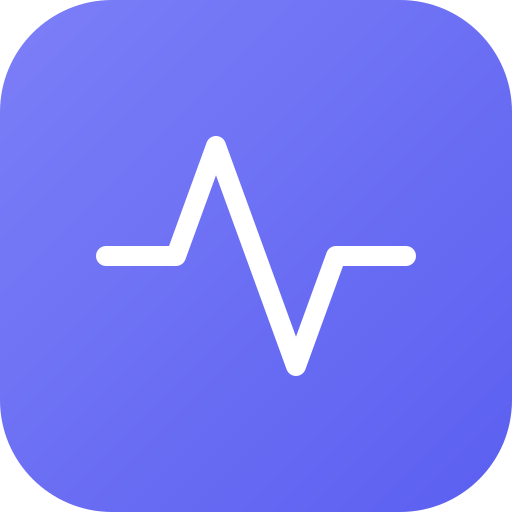

Markets
A price chart with indicators, a watchlist, fundamentals, quarterly financials and a World view of news themes. The feed badge says how fresh the prices are.
Available
FloweySalesFloweySales brings market data, a transparent company leaderboard, strategy backtests, an AI research agent and repeatable automations into one workspace. Every answer shows where it came from, and nothing trades.
A research aid, not investment advice. Live trading is not supported. All times are UTC.
A price chart with indicators, a watchlist, fundamentals, quarterly financials and a World view of news themes. The feed badge says how fresh the prices are.
AvailableRanks a list of companies on value, quality, growth, momentum, timing and risk. The method, the data and the reasons behind each rank are open to inspection.
AvailableReplay rules over past daily prices, or backtest a leaderboard strategy against an index. Check it across markets, periods and settings, then save and export the result.
AvailableAsk questions and watch every tool call. Put several fictional investor characters on one question. Evidence modes hold an answer until its citations check out.
AvailableChain data steps, agents and approvals into repeatable work that runs by hand, on a schedule or on an event. Flows are read-only research.
AvailableSources, publication dates and the method behind a figure are shown where you see it. Missing data is shown as missing, never as zero.
Partly covered